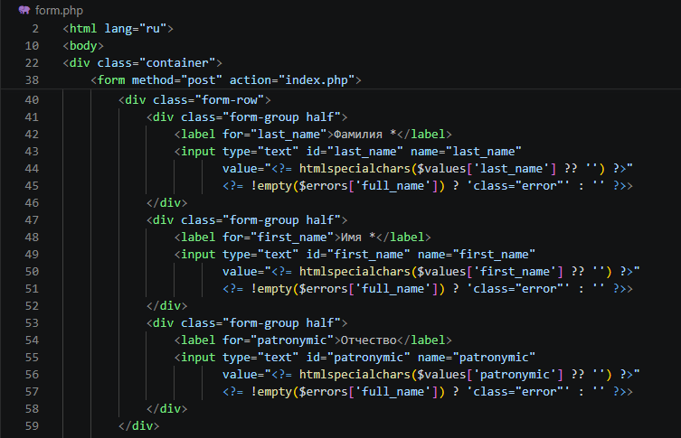
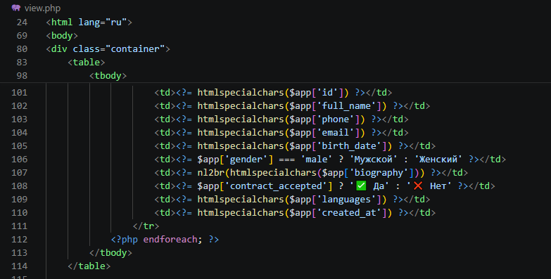
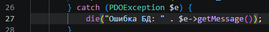
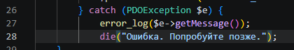
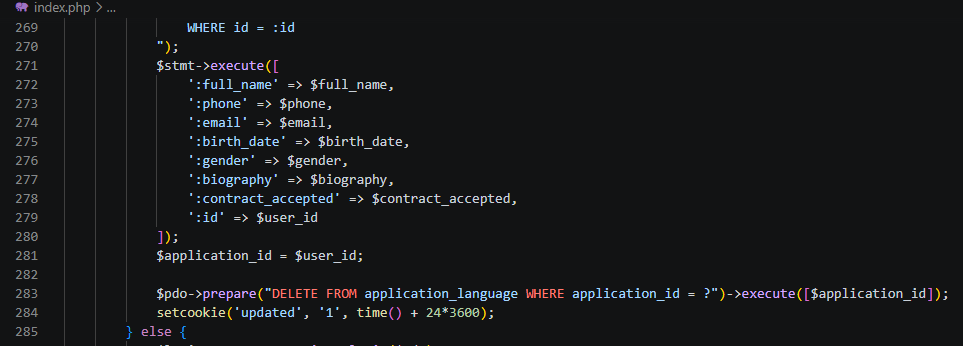

1. XSS (межсайтовый скриптинг)
🔍 Проблема
Описание: Данные, введённые пользователем (ФИО, телефон, биография и т.д.), а также данные, извлечённые из базы, выводились в HTML-страницы без какого-либо экранирования. Это позволяло злоумышленнику внедрять вредоносный JavaScript-код через поля формы или параметры URL.
Чем грозило: Кража сессионных cookies (перехват авторизации), перенаправление на фишинговые сайты, подмена содержимого страницы (дефейс), выполнение действий от имени пользователя (например, изменение анкеты без его ведома).
Решение: Применена функция htmlspecialchars() ко всем данным, которые выводятся внутри HTML-тегов. Функция заменяет специальные символы (< > " ' &) на HTML-сущности, что нейтрализует любой потенциальный скрипт. На скриншотах ниже показано экранирование в форме добавления/редактирования и при выводе таблицы анкет.

Скриншот 1: Значения полей фамилия, имя, отчество экранируются через htmlspecialchars() при отображении формы.

Скриншот 2: При просмотре списка анкет (view.php) все поля также пропущены через htmlspecialchars(), что исключает XSS.
2. Information Disclosure (раскрытие информации)
🔍 Проблема
Описание: В исходном коде приложения при возникновении ошибки подключения к базе данных или ошибки выполнения SQL-запроса происходил прямой вывод деталей исключения через die("Ошибка БД: " . $e->getMessage()). На экран попадал полный текст ошибки: логин, хост, имя базы, фрагменты SQL-запроса, пути к файлам.
Чем грозило: Злоумышленник мог узнать внутреннюю структуру базы данных (имена таблиц, полей), версию СУБД, расположение файлов на сервере, что значительно упрощает подготовку целенаправленных атак (SQL-инъекции, подбор паролей и т.д.).
Решение: Прямой вывод сообщения исключения был заменён на универсальное сообщение «Ошибка. Попробуйте позже.», а подробности ошибки отправляются в серверный лог с помощью error_log(). Пользователь не получает никакой технической информации, что не даёт злоумышленнику возможности для разведки.

Скриншот 3 (уязвимость): Использование die($e->getMessage()) – вся информация об ошибке показывается пользователю.

Скриншот 4 (исправление): Ошибка логируется через error_log(), а пользователь видит только общее сообщение.
3. SQL Injection
🔍 Проблема
Описание: В некоторых местах приложения (до исправления) использовалась конкатенация пользовательских данных в SQL-запросах. Это позволяло злоумышленнику модифицировать структуру запроса, вставляя собственные SQL-команды.
Чем грозило: Полный компрометация базы данных: чтение любых таблиц (включая логины и пароли), удаление или изменение данных анкет, получение прав администратора, а в некоторых случаях – выполнение команд на сервере через расширенные возможности СУБД.
Решение: Во всех взаимодействиях с базой данных используются подготовленные запросы (prepared statements) через POD – метод prepare() с плейсхолдерами (:id, :full_name и т.д.) и последующий execute(). Благодаря этому пользовательские данные всегда передаются отдельно от кода SQL и не могут изменить логику запроса. Даже если злоумышленник попытается внедрить код, он будет интерпретирован как обычная строка.

Скриншот 5: Пример подготовленного запроса – используются именованные плейсхолдеры, значения передаются отдельно через execute(). Инъекция невозможна.
4. Include и Upload уязвимости
🔍 Проблема
Описание: Потенциальная опасность заключалась в динамическом включении файлов (например, через параметр ?page=...) и отсутствии контроля за загружаемыми файлами, что могло привести к выполнению произвольного кода на сервере.
Чем грозило:
- LFI (Local File Inclusion) – чтение конфиденциальных файлов сервера (например, /etc/passwd, файлы конфигурации).
- RFI (Remote File Inclusion) – выполнение вредоносного скрипта с удалённого сервера, полный захват веб-приложения.
- Загрузка PHP-шелла через форму – злоумышленник мог загрузить файл с расширением .php и получить доступ к командной строке сервера.
Решение:
- Все
include/require в проекте используют только фиксированные (константные) имена файлов, например include 'anketka.php'; или include 'config.php';. Никакие данные от пользователя не участвуют в формировании пути включения.
- Функционал загрузки файлов полностью отсутствует в приложении (нет форм с
enctype="multipart/form-data" и обработчиков $_FILES). Следовательно, уязвимость загрузки вредоносных файлов не существует.
- Дополнительно все временные и отладочные файлы (например,
test.php) удалены из корня сервера.
Таким образом, атаки на включение файлов невозможны, а риск через загрузку отсутствует.
📄 Все include – статические, загрузка файлов не используется.
📊 Итоговая таблица устранённых уязвимостей
| Уязвимость |
Метод защиты / исправление |
| XSS (межсайтовый скриптинг) |
htmlspecialchars() при любом выводе в HTML |
| Information Disclosure (раскрытие информации) |
Скрытие деталей ошибок от пользователя, логирование в error_log() |
| SQL Injection |
Подготовленные запросы (PDO prepare/execute) |
| Include / Upload |
Нет динамических include, отсутствует функционал загрузки файлов |
Все выявленные уязвимости устранены. Приложение соответствует базовым требованиям безопасной разработки.